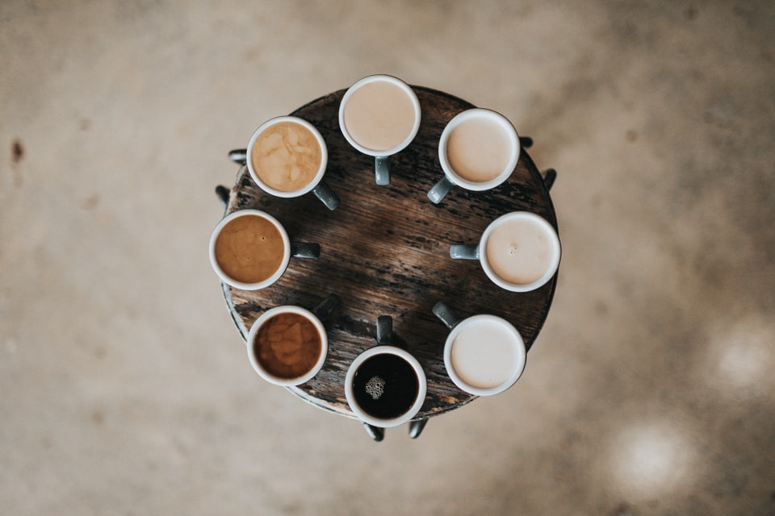

If coffee please bring me some tea; but if this is tea, please bring me some coffee
I wake up some mornings and sit and have my coffee and look out at my beautiful garden, and I go, ’Remember how good this is. Because you can lose it.
Coffee that brings people together ...
I wake up some mornings and sit and have my coffee and look out at my beautiful garden, and I go, ’Remember how good this is. Because you can lose it.
